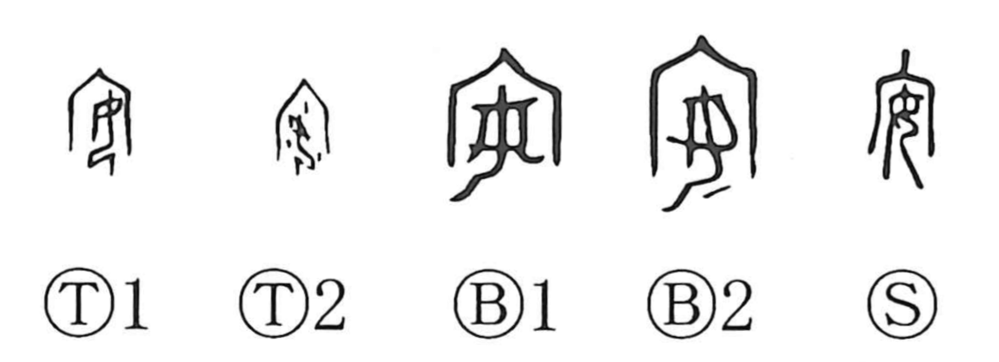

Explanation
安 places 女, a woman, beneath 宀, the roof of an ancestral shrine. The scene is a new bride's reception into her husband's lineage. In the shrine she undergoes purification with ritual wine and receives the ancestral spirit.
Some oracle-bone forms add falling drops; bronze forms can add a garment below the woman. These details belong to the rite establishing her 安寧, a condition of peace and security. The expression 帰寧, returning to visit one's parental home, preserves the same vocabulary of settled well-being.
From the bride's peaceful establishment in the household come being at ease, calming someone, dwelling, and placing something securely. Enjoyment is another related use, shared through interchange with 宴 and 晏. The central connection is between acceptance into a protected household and a state of rest.